유니티 3D - 기본
Written on December 25th, 2018 by Wook Hyun
거의 생초짜가 전문강사님의 강의를 듣고 다시 해 보며 부딪혀 본 내용을 기록한 것입니다. 백문이 불여일견입니다. 책 아무리 들여다보는 것 보다, 직접 하는 것이 낫고.. 혼자 하는 것 보다 전문가의 도움을 받는 것이 훨씬 시간을 절약합니다.
@한동안 다른 일 하다가 다시 하려니 기억이 삭~ 날라갔네…워매…
기본 개념
- Component
- GameObject
- 모든 구성요소의 기본이 됨.
- Transform 컴퍼넌트를 모두 가지고 있음.
- Scripts
- Script와 UI 연계를 위한 직렬화 (Public 변수 선언 등을 통해)가 가능함
- 즉, Script의 C# 코드에서 선언한 변수를 Unity UI에서 제어할 수 있음
- C#, JavaScript로 제어가능하다.
- Script와 UI 연계를 위한 직렬화 (Public 변수 선언 등을 통해)가 가능함
- 많이 쓰는 변수
- Vector3
- Vector3.forward = new Vector3(0,0,1)
- Vector3.up = new Vector3(0,1,0)
- Vector3.right = new Vector3(1,0,0)
- Vector3.one = new Vector3(1,1,1)
- Vector3.zero = new Vector3(0,0,0)
- Vector3
각종 사용 방법
기본제어
이동
아래 함수는 키보드 (WASD) 와 마우스 ( 좌우 ) 를 이용해 캐릭터를 이동시키는 코드이다 .
void Update () {
// Input class 는 외부로부터의 모든 입력을 관장 ( 키보드 , 마우스 , 터치 , ...)
float v = Input .GetAxis( "Vertical" ); // up/down/w/s 입력값을 받아옴 , -1.0 ~ 0.0 ~ +1.0 사이의 값을 가져옴 .
float h = Input .GetAxis( "Horizontal" );
float r = Input .GetAxis( "Mouse X" ); // 마우스 좌우 변위값
/* Method 3 */
Vector3 moveDir = ( Vector3 .forward * v) + ( Vector3 .right * h);
tr.Translate(moveDir.normalized * Time .deltaTime * 6.0f ); // 전 frame 과 그 다음 frame 의 시간차
tr.Rotate( Vector3 .up * Time .deltaTime * 120.0f * r);
}
입력
키보드에서 입력 받아오기
float v = Input .GetAxis( "Vertical" ); // up/down/w/s 입력값을 받아옴 , -1.0 ~ 0.0 ~ +1.0 사이의 값을 가져옴 .
float h = Input .GetAxis( "Horizontal" );
마우스 좌우 변위 가져오기
float r = Input .GetAxis( "Mouse X" ); // 마우스 좌우 변위값
모델링 기본
RigidBody
- 중력(물리)모델을 적용하기 위해 필요한 Component.
Collision
- TBD
Texture
- 색상, 질감등을 입히기 위한 것.
- 3D 모델에 텍스쳐를 입히려면, Material 로 만든 이후에 해야 한다.
- 단순한 색상을 입힐 수도 있고, 이미지도 입힐 수 있다.
- Create->Material 을 통해 ‘FloorTile’이란 이름으로 하나 만들고, floor 이미지를 끌어다 Inspect의 Albedo 왼쪽 사각형에 놓으면 된다.
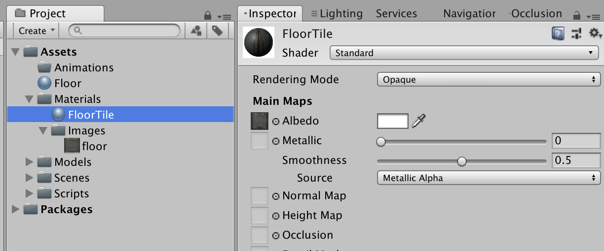
이제 이 FloorTile Material을 바닥으로 끌어다 놓자. 그럼 아래처럼 보인다. 다만, 타일을 stretch하기 때문에 이쁘지 않다.
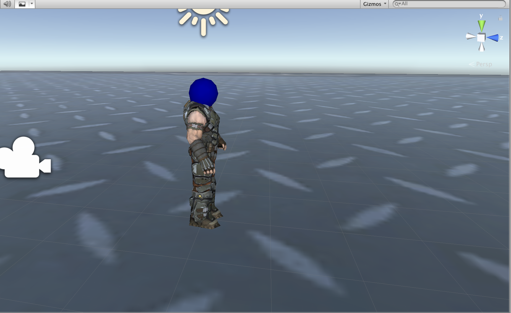
그럼 이렇게 해 보자. 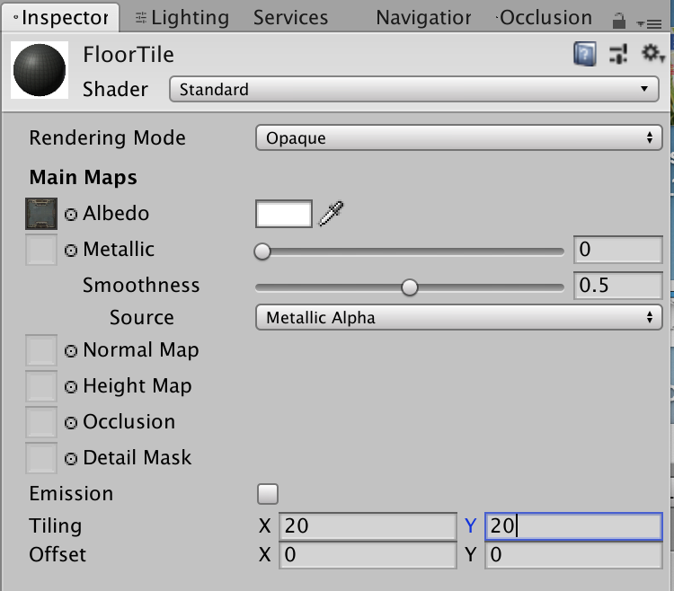
그럼 이렇게 보인다. 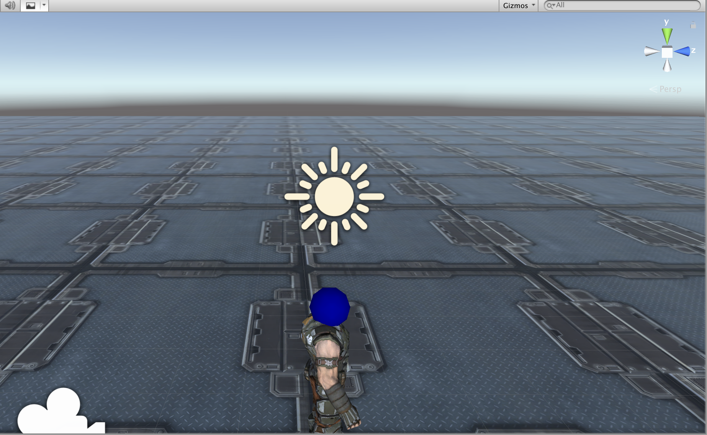
쫌 이쁘지 아니한가?
Scene 전환
Scene을 여러 개 두고 전환하기 위해서는 다음 코드를 사용하며, 전환 방식에 따라 다양한 코드의 변형이 있을 수 있다.
using UnityEngine.SceneManagement;
void LoadScene()
{
SceneManager .LoadScene( "SampleScene" );
SceneManager .LoadScene( 1 );
// 중첩해서 신을 호출하는 경우
SceneManager .LoadScene( 1 , LoadSceneMode .Additive);
SceneManager .LoadSceneAsync() // CoRoutine 으로 숨겨서 로딩하고 다 받아지면 넘어가는 ..
}
기본 전환
SceneManager .LoadScene( "SampleScene" );
SceneManager .LoadScene( 1 );
중첩 Scene
// 중첩해서 신을 호출하는 경우
SceneManager .LoadScene( 1 , LoadSceneMode .Additive);
비동기 로딩
SceneManager .LoadSceneAsync() // CoRoutine 으로 숨겨서 로딩하고 다 받아지면 넘어가는 ..
카메라 제어
카메라가 플레이어를 따라 오도록 하기
Script 를 하나 만들고 이름은 CameraSmoothFollow 라고 짓는다 . 그리고 아래 코드를 그냥 복붙하자. 참고로, 클래스명은 Script 명과 동일하게 해 줘야 한다.
using UnityEngine;
namespace UnityStandardAssets.Utility
{
public class CameraSmoothFollow : MonoBehaviour
{
// The target we are following
[ SerializeField ]
private Transform target;
// The distance in the x-z plane to the target
[ SerializeField ]
private float distance = 10.0f ;
// the height we want the camera to be above the target
[ SerializeField ]
private float height = 5.0f ;
[ SerializeField ]
private float rotationDamping;
[ SerializeField ]
private float heightDamping;
// Use this for initialization
void Start() { }
// Update is called once per frame
void LateUpdate()
{
// Early out if we don't have a target
if (!target)
return ;
// Calculate the current rotation angles
var wantedRotationAngle = target.eulerAngles.y;
var wantedHeight = target.position.y + height;
var currentRotationAngle = transform.eulerAngles.y;
var currentHeight = transform.position.y;
// Damp the rotation around the y-axis
currentRotationAngle = Mathf .LerpAngle(currentRotationAngle, wantedRotationAngle, rotationDamping * Time .deltaTime);
// Damp the height
currentHeight = Mathf .Lerp(currentHeight, wantedHeight, heightDamping * Time .deltaTime);
// Convert the angle into a rotation
var currentRotation = Quaternion .Euler( 0 , currentRotationAngle, 0 );
// Set the position of the camera on the x-z plane to:
// distance meters behind the target
transform.position = target.position;
transform.position -= currentRotation * Vector3 .forward * distance;
// Set the height of the camera
transform.position = new Vector3 (transform.position.x, currentHeight, transform.position.z);
// Always look at the target
transform.LookAt(target);
}
}
}
그리고, UI 로 돌아오자. 그리고, 만든 스크립트를 Main Camera 에 끌어다가 child 화 시킨다.
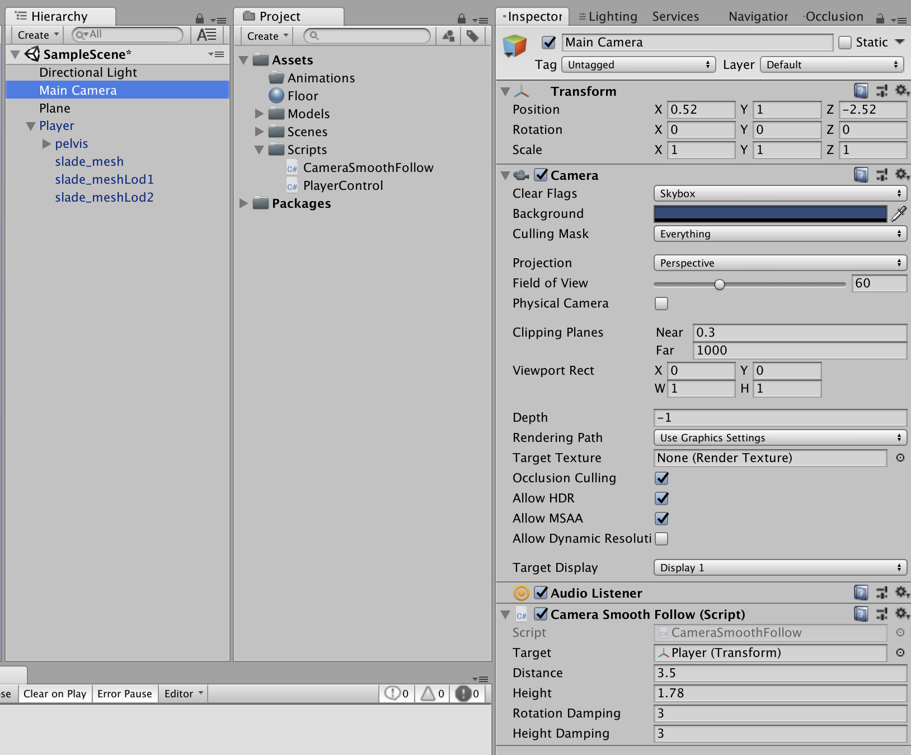
여기서 카메라가 따라다닐 Target 을 정해줘야 하는데, Player를 따라다니게 하려면 Player의 Transform 좌표값을 받아올 수 있어야 하므로, Target에 Player를 할당해 주도록 하자. 그리고, Distance를 적당히 잡아주고, 거리(Distance)는 3.5m 정도, Height는 사람의 눈높이로 1.78을 둔다. Rotation/Height Damping 등은 잘 모르겠다.
다만, 아래처럼 나올거다.
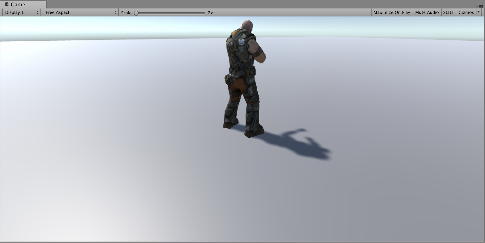
카메라가 따라 다닐 오브젝트를 하나 만들어 Player에게 달아주는 식으로 해결할 수 있다. Player 밑에 GameObject 를 하나 달아주자.
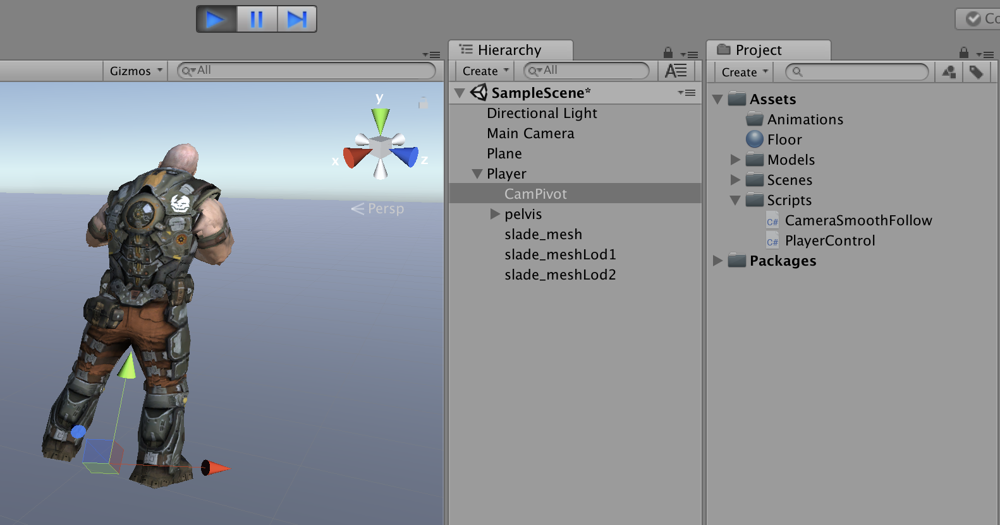
이 피봇의 위치를 머리의 눈 높이 위치로 옮겨주고, 모양이 잘 보이지 않으니 Gizmo를 달아주자.
먼저 inspector의 좌측 최상단에 있는 형형색색 큐브모양을 눌러서 원하는 모양을 달아주자.
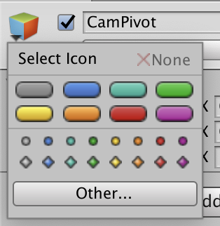
그럼 아래처럼 보인다 .
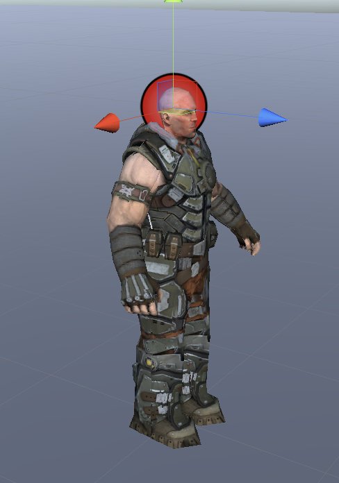
Main Camera의 Camera Smooth Follow 컴퍼넌트의 Target을 얘로 바꿔주자.
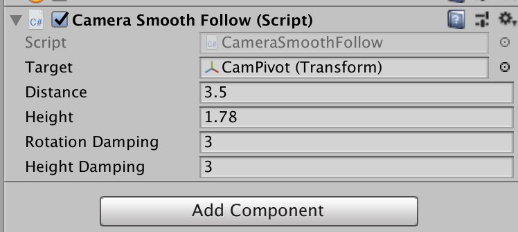
자, 아까와는 조금 다른 모습이다.
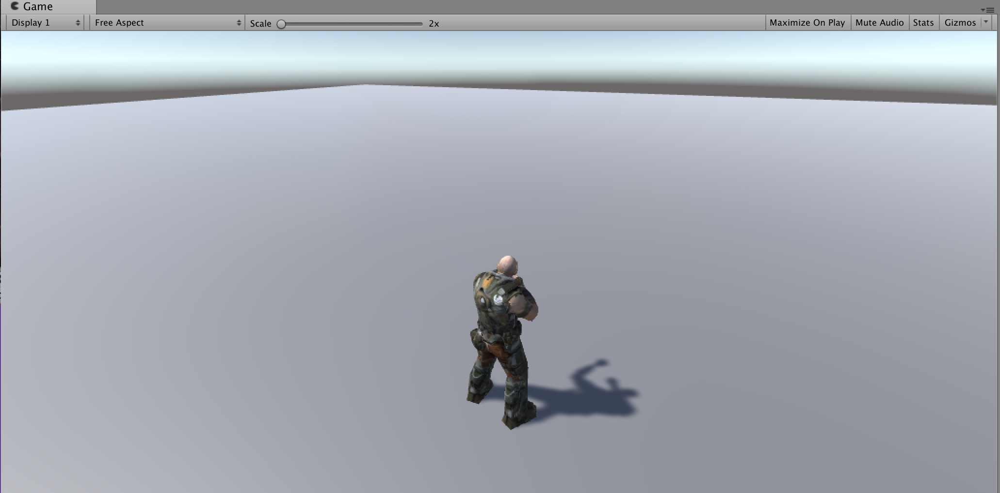
기즈모(Gizmo) 다루기
기본적으로 제공하는 시스템 기즈모를 사용할 수도 있고, 자체적으로 만들어 사용할 수도 있다. 주로 대규모 인원이 투입되는 경우에 유용하다.
먼저, 스크립트를 하나 만들자. MyGizmos 라고 이름을 지어보자. 그리고 아래처럼 입력하자.
using System.Collections;
using System.Collections.Generic;
using UnityEngine;
public class MyGizmos : MonoBehaviour {
public Color _color = Color .blue;
public float _radius = 0.2f ;
void OnDrawGizmos()
{
Gizmos .color = _color;
Gizmos .DrawSphere(transform.position, _radius);
}
}
그리고, 원하는 GameObject 에 할당한다. 그럼 위처럼 보인다 . 색상이나 radius도 바꿀 수 있다.
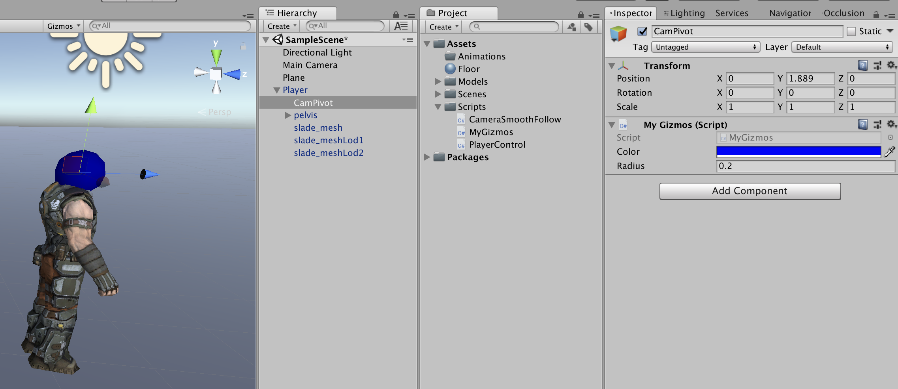
캐릭터 애니메이션 넣기
캐릭터에 생명력을 불어넣는 애니메이션을 달기 위해서는 두 가지 방법이 있다. (Animation과 Animator)
Animation
모델과 애니메이션이 분리된 경우에 사용된다.
먼저 모델을 프로젝트 panel에서 Hierarchy panel로 가져오고, 위치는 0,0,0으로 셋팅해준다. 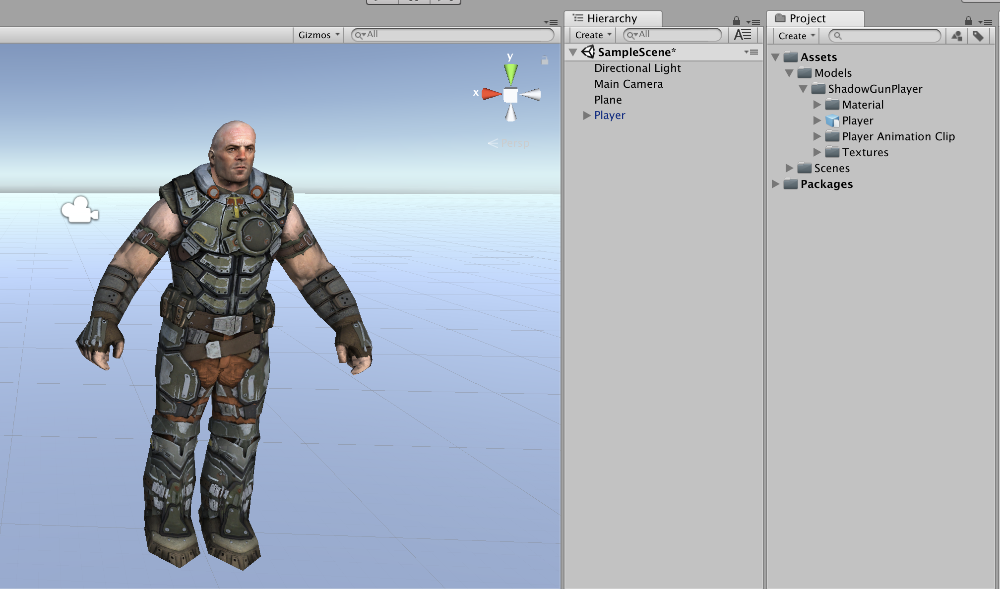
Player의 inspect에서 [Add Component] 버튼을 누르고, Animation을 추가한다. 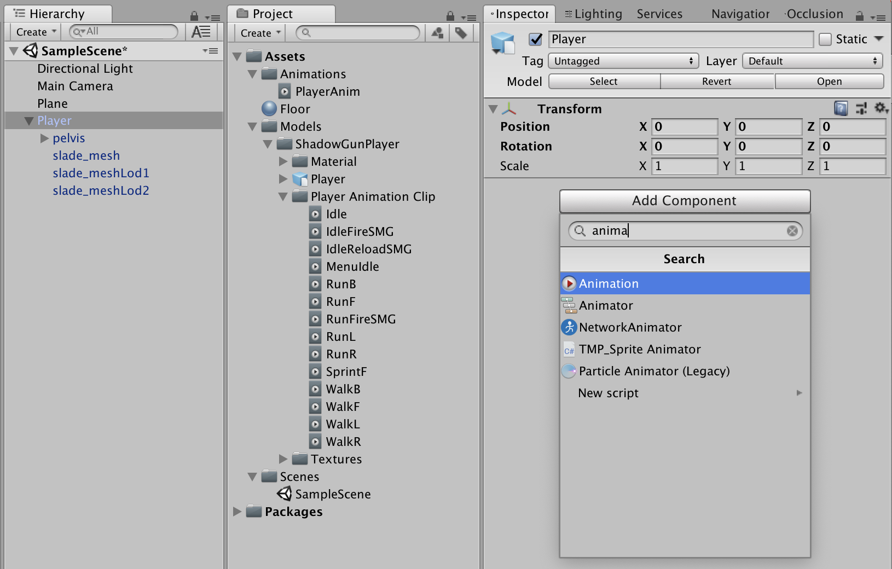
그리고 난 뒤에 아래와 같이 셋팅한다 . Player 의 animation clip 을 element 에 할당해 준다. 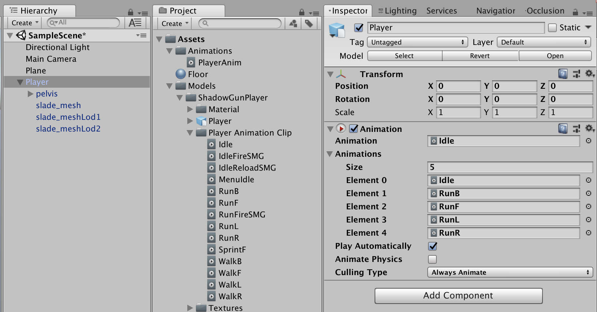
등록된 animation clip들 중 원하는 clip을 실행시키는 것은 script를 통해 이뤄지게 한다.
using System.Collections;
using System.Collections.Generic;
using UnityEngine;
[System.Serializable] //UI 에 노출되기 위해서는 직렬화해 줘야 함
public class PlayerAnim
{
public AnimationClip idle;
public AnimationClip runF;
public AnimationClip runB;
public AnimationClip runL;
public AnimationClip runR;
public AnimationClip shoot;
}
public class PlayerCtrl : MonoBehaviour {
private Transform tr;
private Animation anim;
public PlayerAnim playerAnim;
void Start () {
tr = GetComponent< Transform >();
anim = GetComponent< Animation >();
}
void Update () {
// Input class 는 외부로부터의 모든 입력을 관장 ( 키보드 , 마우스 , 터치 , ...)
float v = Input .GetAxis( "Vertical" ); // up/down/w/s 입력값을 받아옴 , -1.0 ~ 0.0 ~ +1.0 사이의 값을 가져옴 .
float h = Input .GetAxis( "Horizontal" );
float r = Input .GetAxis( "Mouse X" ); // 마우스 좌우 변위값
/* Method 3 */
Vector3 moveDir = ( Vector3 .forward * v) + ( Vector3 .right * h);
tr.Translate(moveDir.normalized * Time .deltaTime * 6.0f ); // 전 frame 과 그 다음 frame 의 시간차
tr.Rotate( Vector3 .up * Time .deltaTime * 120.0f * r);
if (v >= 0.1f ) {
// smooth 하게 animation 을 transition 해 줘야 함
anim.CrossFade(playerAnim.runF.name, 0.3f );
} else if ( v <= - 0.1f ) {
anim.CrossFade(playerAnim.runB.name, 0.3f );
} else if ( h >= 0.1f ) {
anim.CrossFade(playerAnim.runR.name, 0.3f );
} else if (h <= - 0.1f ) {
anim.CrossFade(playerAnim.runL.name, 0.3f );
}
else {
anim.CrossFade(playerAnim.idle.name, 0.3f );
}
}
}
다시 UI 로 돌아와서 아래처럼 셋팅한다.
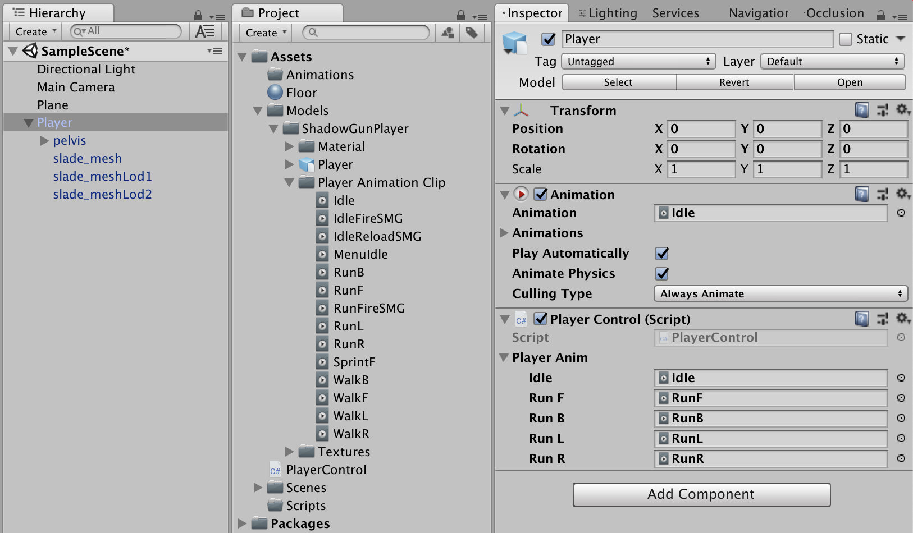
Animation 컴퍼넌트에도 클립을 등록했는데, 여기에서 또 해줘야 하는데.. 둘 간의 연관관계가 무엇인지는 모르겠으나, Animation 컴퍼넌트를 disable (uncheck) 하고 플레이를 하면, 애니메이션 동작이 이뤄지지 않는다.
Animator
모델에 애니메이션이 포함된 경우(mecanim)
타임라인(Timeline) 활용
주로 Cinematic 영상을 만들 때 사용하는 방법.
먼저 Windows->Package Manager 에서 Cinemachine 을 설치한다.
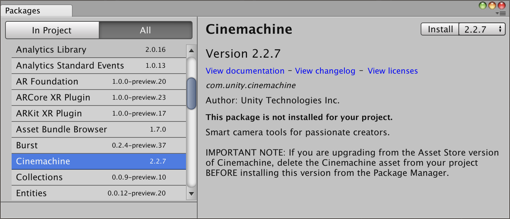
설치된 패키지들은 해당 프로젝트에서만 유효하다. 즉 , 프로젝트마다 필요할 경우 설치 하면 된다.
- 모델을 적당히 배치한다.
- 메인카메라를 선택하고, 메뉴의 Component->Cinemachine을 추가한다. 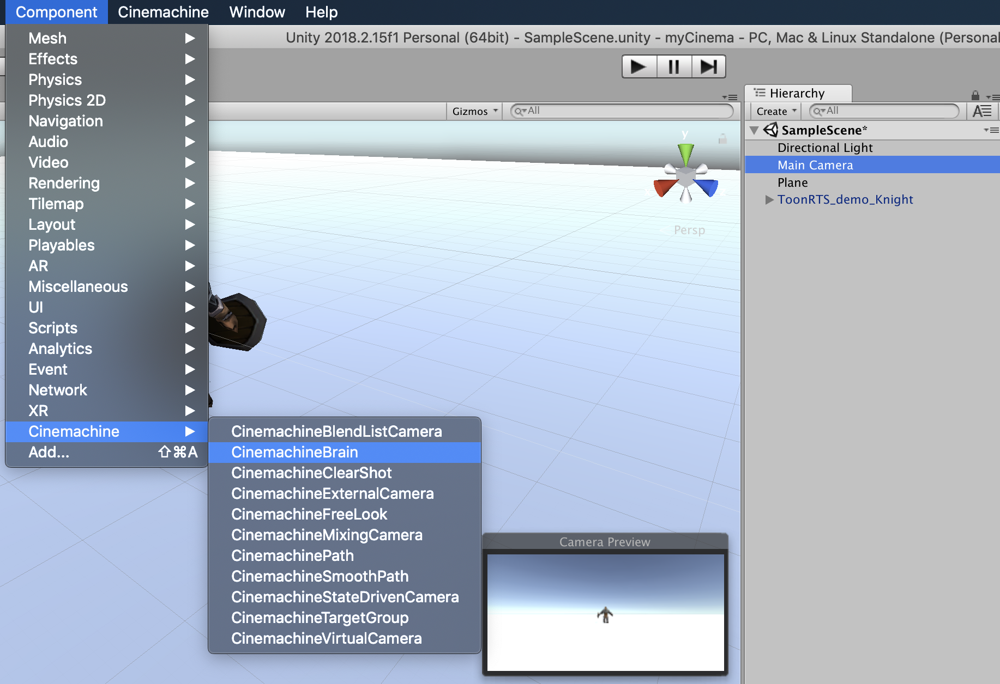
Main Camera 에 대한 inspector 를 보면 다음과 같이 컴퍼넌트가 추가되어 있을 것이다. 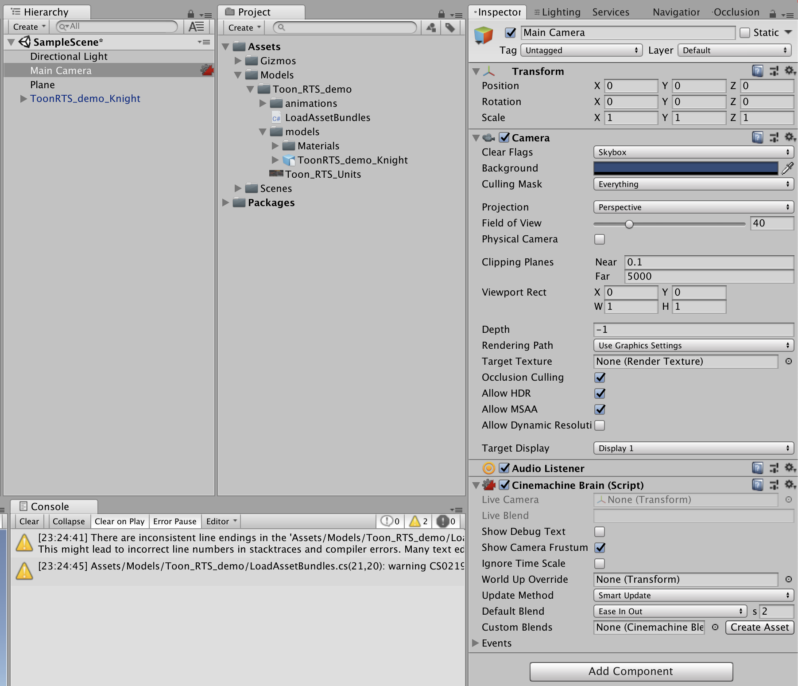
여기까지만 하면 된다 . 참고로, Live Camera에 아무것도 할당되어 있지 않아 있다. 나중에 Virtual Camera 설치하면 바뀔거다.
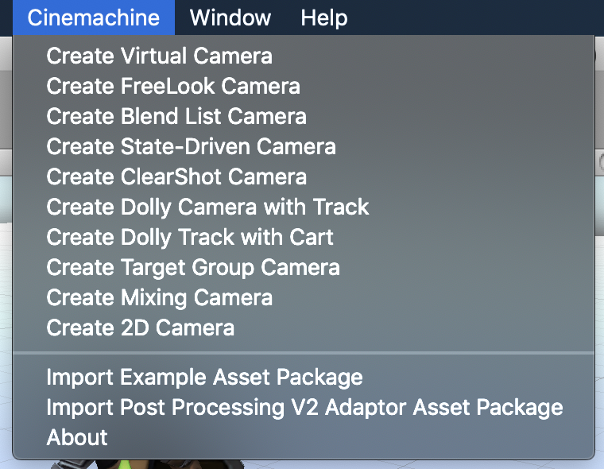
Cinemachine->Create Virtual Camera 를 통해 가상 카메라 설치하자 . 그리고 적당한 위치로 옮겨준다.
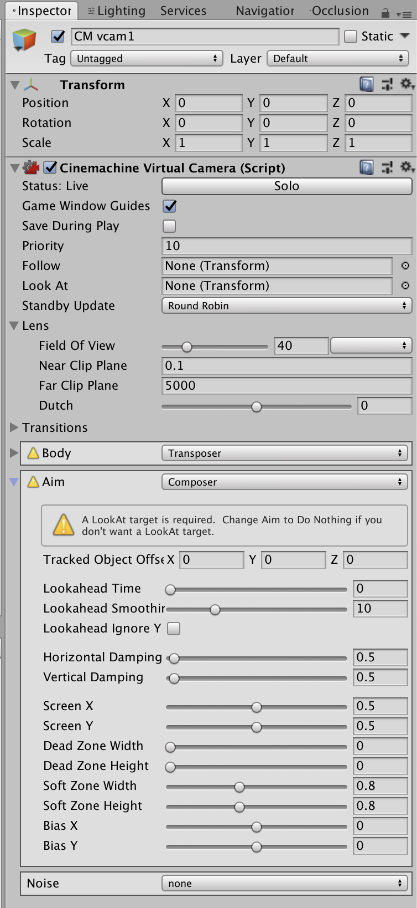
그러면, inspector가 위처럼 보일 거다. 아래처럼 바꿔주자. Lens->Field Of View 를 수정하면 카메라의 줌 효과가 있다. 작을수록 더 댕겨진다. Aim 에서 Dead Zone Width/Height를 조정한다. 카메라가 이동하는 기준점을 잡아준다. Tracked Object Offset의 Y값을 위로 올려준다.
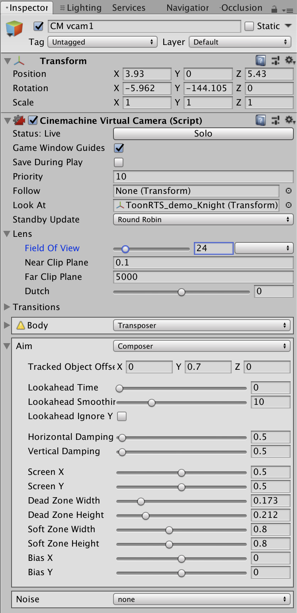
그럼 위 처럼 된다 . Preview 화면을 보면 다음과 같이 생길거다 .
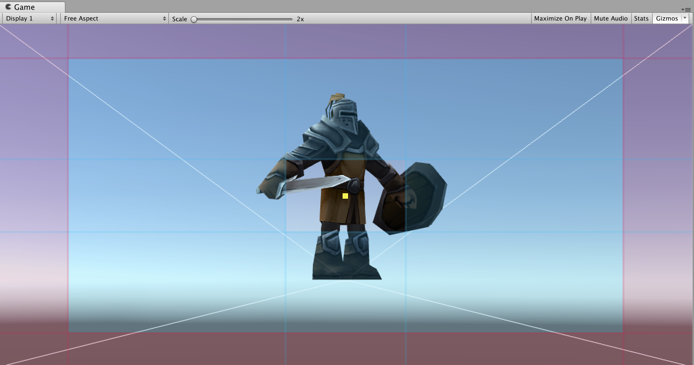
가상 카메라를 몇 개 더 달아주고 위의 과정을 반복한다. Project->Create->Timeline을 해주고, 걔를 D&D로 Hierarchy 의 모델에다가 추가한다.
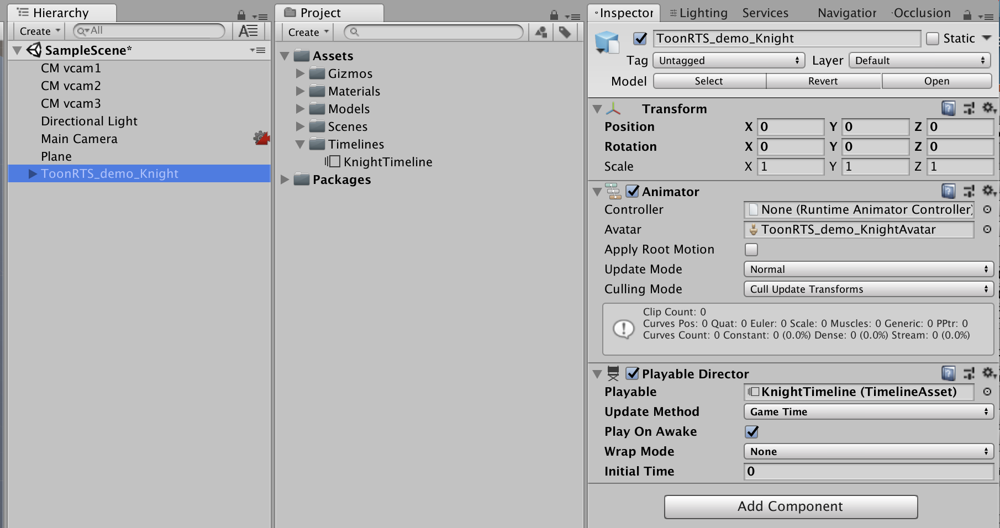
그러면 inspect 에 자동으로 Playable Director 컴퍼넌트가 추가 되고, Playable에 Timeline이 맵핑된다. 이제 Timeline을 손대보자. 더블클릭.
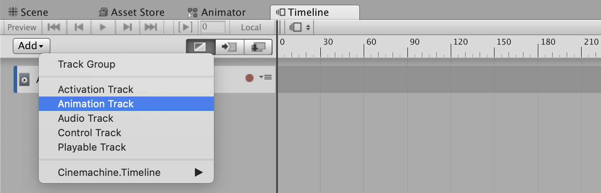
처음엔 아무것도 없을것이다. 여기다가 Animation Track을 Add 하자. 그리고 좌측위쪽 버튼(아래화살표+작대기 세개)을 눌러 애니메이션을 추가해보자.
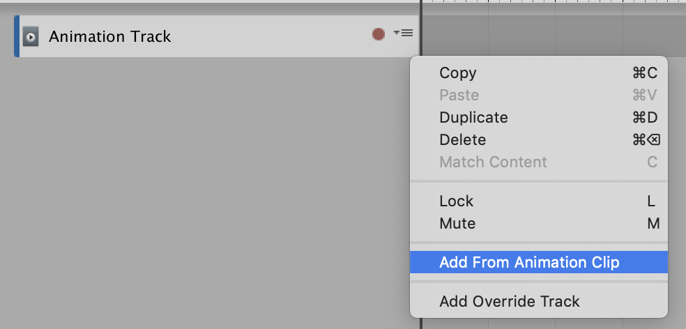
적당한 녀석을 선택하자. 이걸 반복한다. 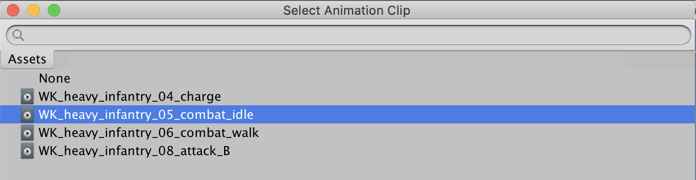
그 다음에는 카메라 설치를 위해 Cinemachine 트랙을 추가하자. 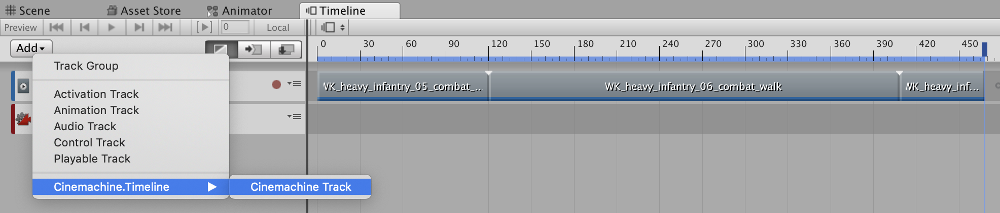
마찬가지로, 작대기화살표 버튼을 눌러 , virtual camera 를 추가한다. 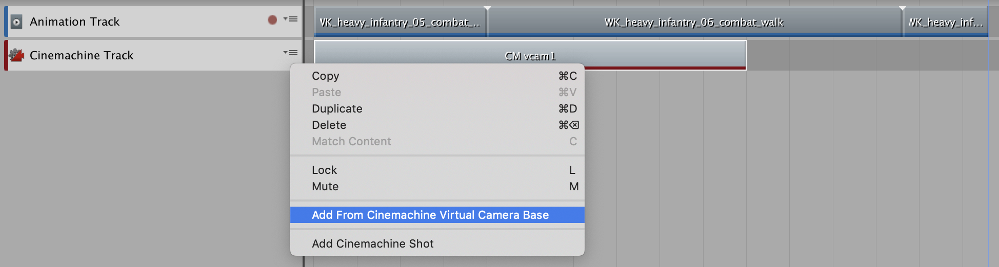
가상 카메라를 적절히 배치하자. 왼쪽부터 1-2-3. 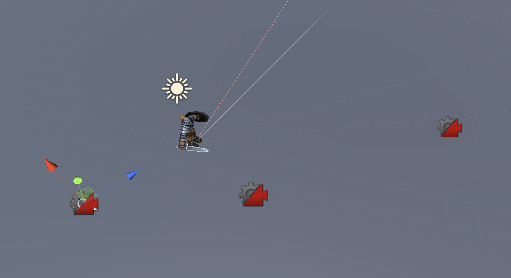
주의할 점으로, 첫번째 카메라를 끌어다가 붙여줘야만 되더라. 대충 아래처럼 만들어보자. 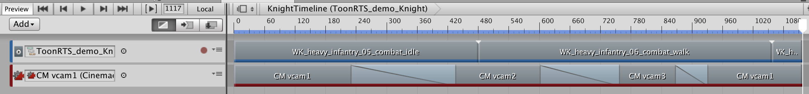
그럼 정해진 시간에 맞춰 카메라가 전환된다. 근데 요상스럽게, CM vcam1을 맨 마지막에 재사용 해 보려 했으나, 반응을 하지 않는다. 왜 그런지 모르겠다. 오디오도 간간히 추가해주고 해 보자. 같은 로직이라 그닥 다를게 없다.
TODO: Activation에 대한 것도 알아는 봐야 쓰겄다.
오브젝트 풀링 (Object Pooling)
- 오브젝트가 많은 경우 사전에 미리 로딩시켜 놓는 기법
먼저 Script 를 하나 만들자. 이름을 GameManager로 한다. 이 파일 이름도 일종의 예약어이다. 프로젝트 panel에서 아이콘이 살짝 바뀌는 것을 알 수 있다. 해당 코드를 열어 다음과 같이 코딩한다.
using System.Collections;
using System.Collections.Generic;
using UnityEngine;
public class GameManager : MonoBehaviour {
[System.NonSerialized]
public Transform [] points;
[System.NonSerialized]
public GameObject monster;
[ Range ( 5 , 20 )]
public int maxPool = 10 ;
public float createTime = 3.0f ;
public List < GameObject > monsterPool = new List < GameObject >();
public bool isGameOver = false ;
// Use this for initialization
void Start () {
monster = Resources .Load< GameObject >( "Prefabs/monster" );
points = GameObject .Find( "SpawnPointGroup" ).GetComponentsInChildren< Transform >(); //find 는 순차검색이라 절대 update 함수에서는 사용되어서는 안된다
CreatePool();
StartCoroutine(CreateMonster());
}
void CreatePool()
{
for ( int i = 0 ; i < maxPool; i++)
{
GameObject _monster= Instantiate(monster, this .transform);
_monster.name = "Monster_" + i.ToString( "00" );
_monster.SetActive( false );
monsterPool.Add(_monster);
}
}
IEnumerator CreateMonster()
{
while (!isGameOver)
{
yield return new WaitForSeconds (createTime);
foreach ( GameObject _monster in monsterPool)
{
if (_monster.activeSelf == false )
{
int idx = Random .Range( 1 , points.Length);
_monster.transform.position = points[idx].position;
_monster.SetActive( true );
break ;
}
}
}
}
}
Hierarchy 화면에서 GameObject를 하나 만든다. 이름은 GameManager로 하고, 좀 전에 만든 스크립트를 여기에 끌어다 놓는다.
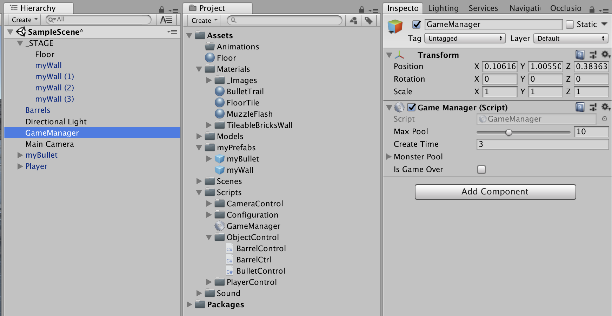
정적 라이트맵 (Static Lightmap)
조명 계산을 미리 해 놓아 성능 향상을 꾀하는 방법.
Occlusion
객체에 가려 보이지 않는 부분은 렌더링이 되지 않도록 하는 방식
Occluder
Occludee
애셋 번들
애셋 번들링
C# 스크립트를 이용하는 방법
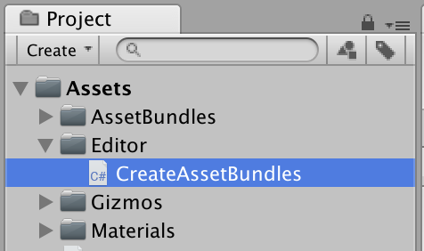
Assets 폴더 밑에 Editor라는 폴더를 만든다. 여기서 Editor는 UI의 예약어로 반드시 이 이름의 폴더를 만들어야 한다. 그 밑에 C# 스크립트를 만든다. 이름은 아무거나 상관없다. 그리고 아래와 같이 코드를 입력한다.
using UnityEngine;
using UnityEditor;
public class CreateAssetBundles : MonoBehaviour {
[ MenuItem ( "Assets/Build Asset Bundles" )]
static void BuildAssetBundles()
{
BuildPipeline .BuildAssetBundles( "Assets/AssetBundles" , BuildAssetBundleOptions .None, BuildTarget .Android);
}
}
AssetBundler 툴킷을 이용하는 방법
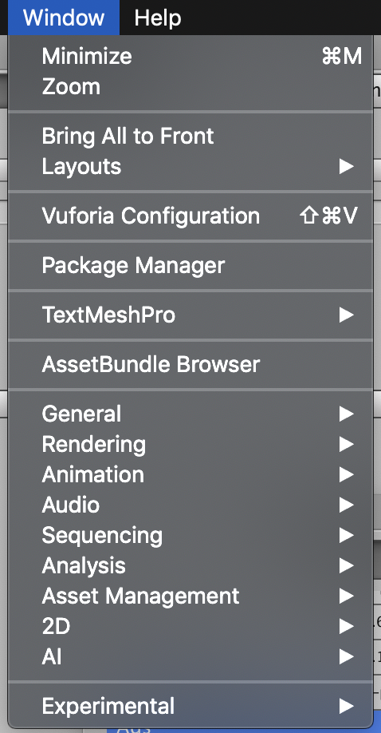 Package Manager 에서 추가 툴킷 (AssetBundle) 을 설치하면 , 위와 같이 AssetBundle Browser 메뉴가 나온다 . 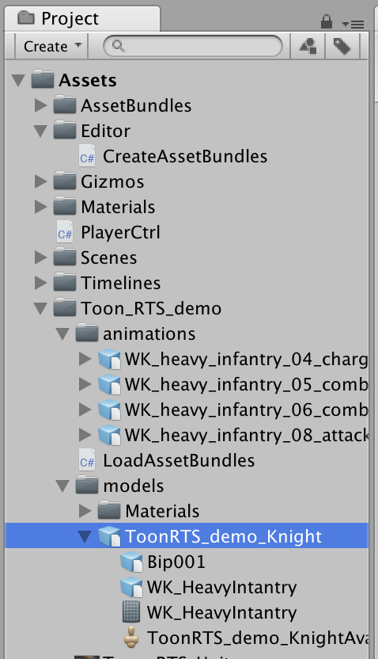 Project 화면에서 번들하고자 하는 모델을 선택한다 . (Prefab 선택 ) 그리고 , inspector 화면의 preview 밑 제일 하단에 아래와 같이 한다 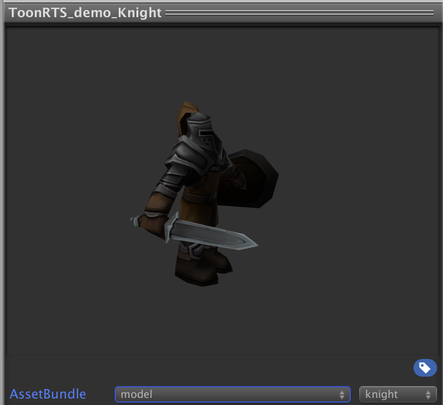
AssetBundler 의 New 를 선택하여 name 값을 입력하고 , subname 을 입력한다 . 여기서 name 은 ‘model’, subname 은 ‘knight’ 이다 . 나중에 AssetBundler 로 bundle 하면 , model.knight 라는 파일이 생긴다 . Windows->AssetBundler Browser 를 실행한다 . 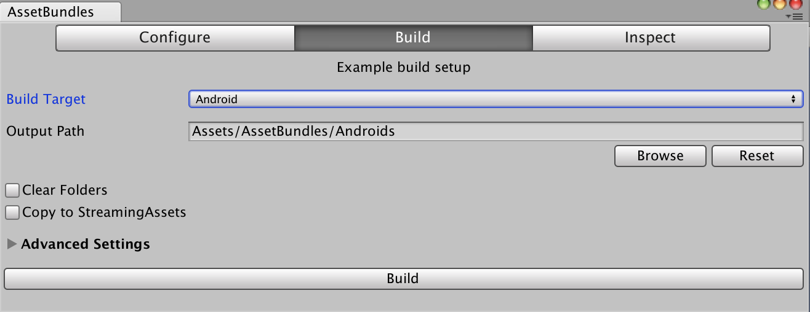
Build Target 을 선택하고 , Output path 를 지정한 이후 Build 버튼을 누른다. 끝 .
번들 애셋 로딩
- 스크립트를 만들고 GameObject 아무 것에나 할당하면 됨.
- 참고로 Start() 함수도 CoRoutine으로 호출 가능함
public class LoadAssetBundles : MonoBehaviour {
public string url = "http://www.etri.re.kr/cdn/model.knight" ; // 이런 경로에 있다고 가정 하자
public int version = 1 ; // remote service
// Use this for initialization
IEnumerator Start () {
WWW www = WWW .LoadFromCacheOrDownload(url, version);
yield return www;
AssetBundle ab = www.assetBundle;
GameObject obj = Instantiate(ab.LoadAsset( "model.knight" )) as GameObject ;
}
void LoadScene()
{
SceneManager .LoadScene( "SampleScene" );
SceneManager .LoadScene( 1 );
// 중첩해서 신을 호출하는 경우
SceneManager .LoadScene( 1 , LoadSceneMode .Additive);
SceneManager .LoadSceneAsync() // CoRoutine 으로 숨겨서 로딩하고 다 받아지면 넘어가는 ..
}
}